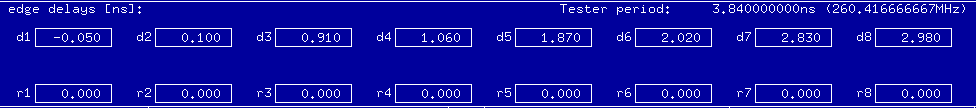

The Edge Delays Overlay
The edge delay overlay displays the delay of each edge in ns. The overlay lets you select and position an edge by directly entering a delay value into the appropriate edge delays field.
Drive edge and receive edges are displayed.

The overlay is automatically displayed when you clicke of the device cycles (bring it into the edit mode).
Functional changes
- Introduced before SmarTest 6.3.2